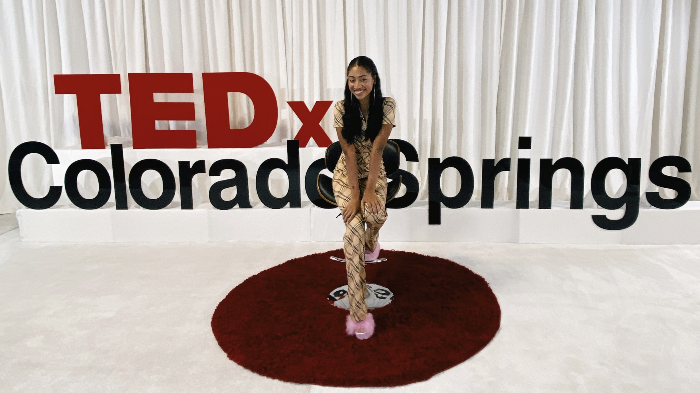

About
Dear Reader,
When I was first introduced to coding I was immediately excited by the practice, but for a while I couldn’t see the totality of the subject beyond zeros and ones. It felt like a space that was very mathematical and analytical. As someone who is excited by the social world and completely obsessed with my own creative flair, I wasn’t sure if computer programming would be the space for me full-time.
During the summer of 2020 as I watched Black Lives Matter protests erupt all over the nation, I was itching to get involved but didn’t know how I could do anything impactful from my living room. I was always told that coding is a tool to be used as the ultimate problem solver, so I whipped out my computer and thought I’d give it a try. I ended up building a website called Pb-Resources, which stands for police brutality resources.
At its origin, it’s a web based toolkit I built to make it easier for people to get involved in the fight for social justice from home. It pools resources from across the web centered around three ideas: education, action, and aid. Some of the tools on the website include an auto-generated email sender to contact elected officials and a glossary of common terms that appear during conversation about equal justice and Black lives. The website has reached over two million users, and it has allowed me to work with companies like Goop, Teen Vogue, and Meta to build their community missions around social justice action items.
Over the years I’ve been able to further my skills in building web environments for social good more and more. Now, my websites reflect my passion in a wide range of creative disciplines like graphic design, audio, and video, and displays my broader understanding of what programming and development can be: a place where the analytical and creative collide.
As a multi-hyphenate creative I hone in on all of my skills to build projects that are not only beautiful and impactful, but effective. I hope to continue creating in the web and audio-visual spaces in the future to generate immersive experiences that force us to consider the diverse perspectives of the world around us.
Best,
Alexis Williams